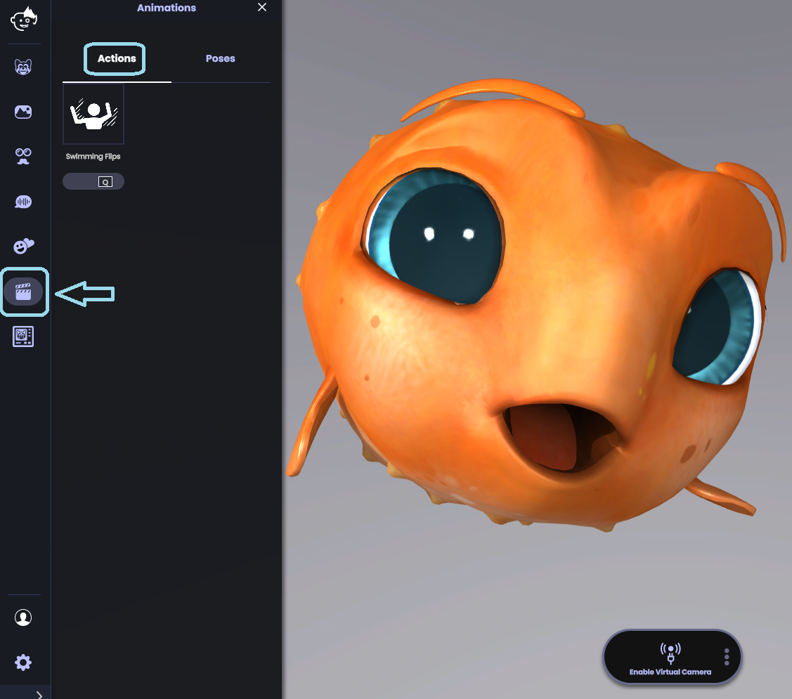
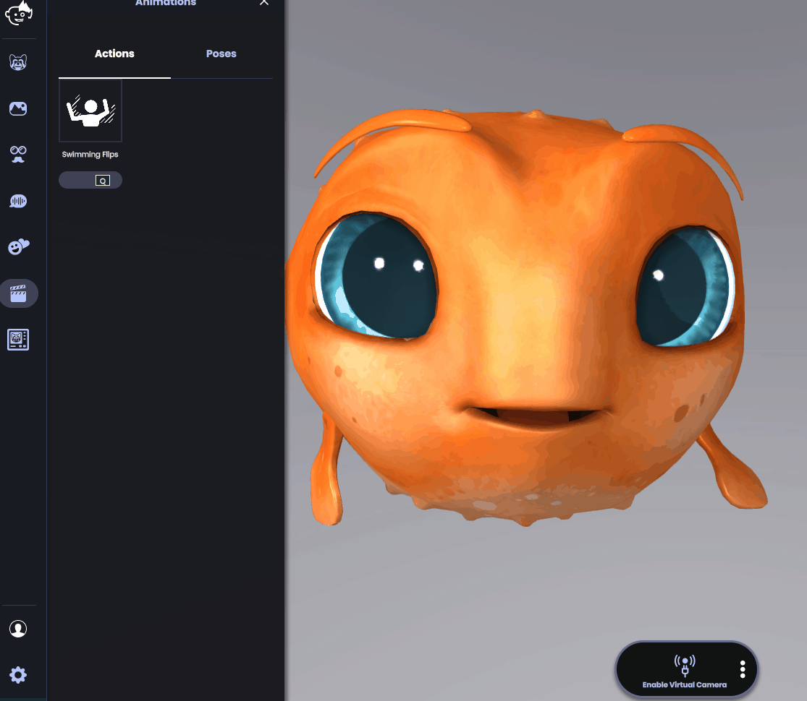
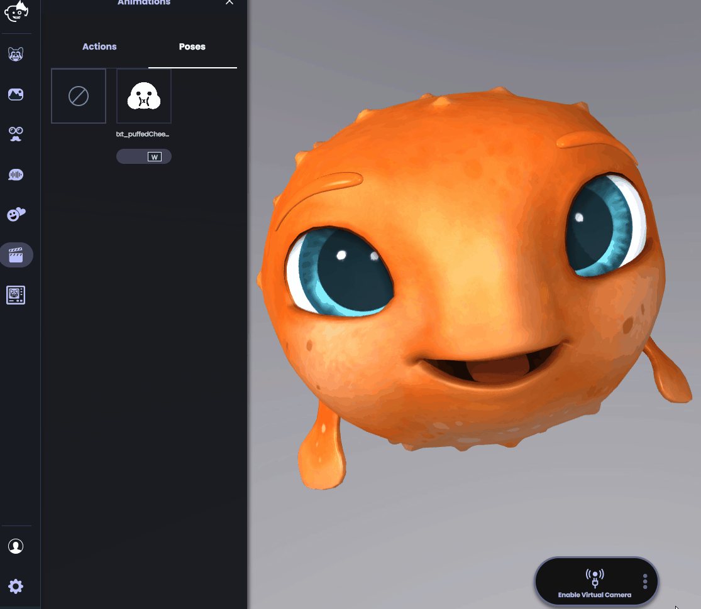

Avatar Animations and special actions
Both 2D and 3D avatars have a set of animations and poses, triggerable by keypress (usually Q, W, E, R, T).
Upon keypress, special animations will play. Once complete, the avatar returns to its neutral pose. Many avatars have a base set of special animations, such as waving and thumbs up. Some avatars have unique special actions (e.g., Howard the Piglet’s balloon animation).
Special poses change the avatar’s expressions and poses. A special pose remains active until the key that triggered the special pose is pressed again. For example, if a Live2D avatar has a special pose that changes the expression from happy to sad, once triggered, the avatar will remain sad until you hit the same keypress again.
How to trigger special animations or special poses:
1. Tap on the Animations icon
-
The animations menu will open.

2. Click on one of the available animations or press on its key counterpart.

PRO TIP: Use animations while recording a video or streaming!
Under animations, you will also find the “Poses” option. For example, Freddy’s special pose is puffed cheeks. Better lay off the seaweed a bit, Freddy!

As you can see, an alternative is to use the shortcut, which is shown under the action button. In the case of the puffed cheeks, the shortcut is the W key .